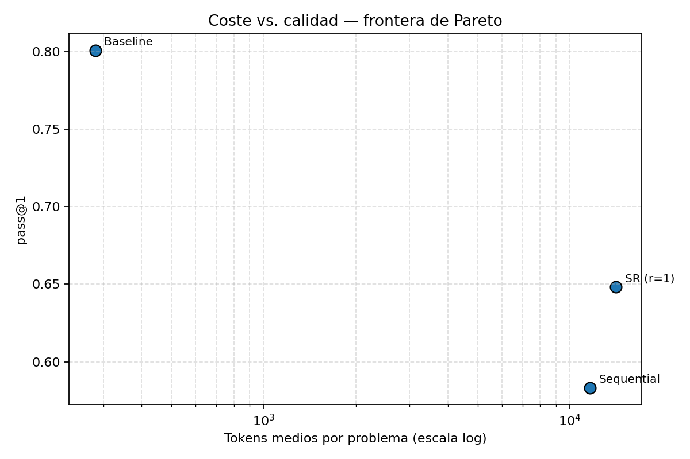

Orquestación multi-agente vs LLM monolítico — Demo
HumanEval · Qwen 2.5 Coder 7B (Q4_K_M) · Ollama local · MacBook Air M2
Trace file:
Resumen global (1 476 ejecuciones)
Configuración
n
pass@1
IC 95 %
Tokens medios
Latencia (s)
Baseline
492
80,08 %
[76,4 ; 83,5]
283
5,1
Sequential
492
58,33 %
[53,9 ; 62,6]
11 614
396,4
SR (r=1)
__SR_N__
__SR_PASS__
__SR_IC__
__SR_TOK__
__SR_LAT__
McNemar baseline vs sequential: p < 0,0001
(b=128, c=21). McNemar sequential vs SR_r1: __MCNEMAR_H2__.
H1 rechazada con dirección invertida; H2 __H2_VEREDICT__;
H3 rechazada con dirección invertida.

Frontera de Pareto coste–calidad. El baseline (esquina superior izquierda)
domina ambas configuraciones multi-agente en pass@1 con coste 40× menor en tokens
y 77× menor en latencia.
Problema demo
Ver enunciado
Grabación de la corrida
Grabación de las tres configuraciones ejecutándose sobre el mismo
problema. El baseline termina en pocos segundos; el pipeline secuencial
recorre cinco agentes; la configuración con self-reflection añade el bucle
Reviewer → Developer.